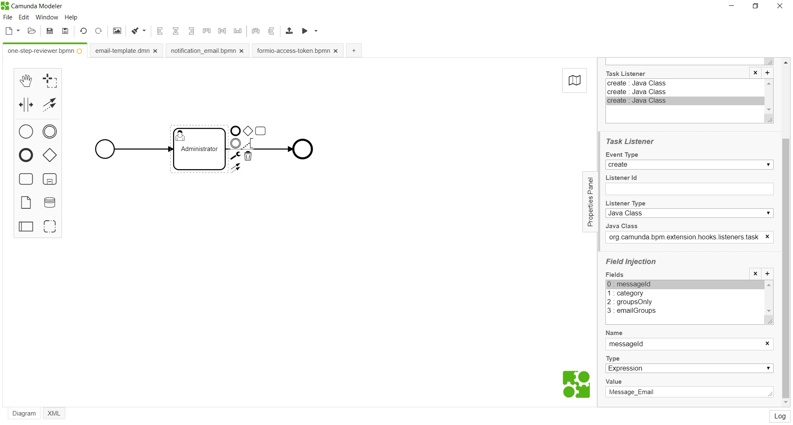
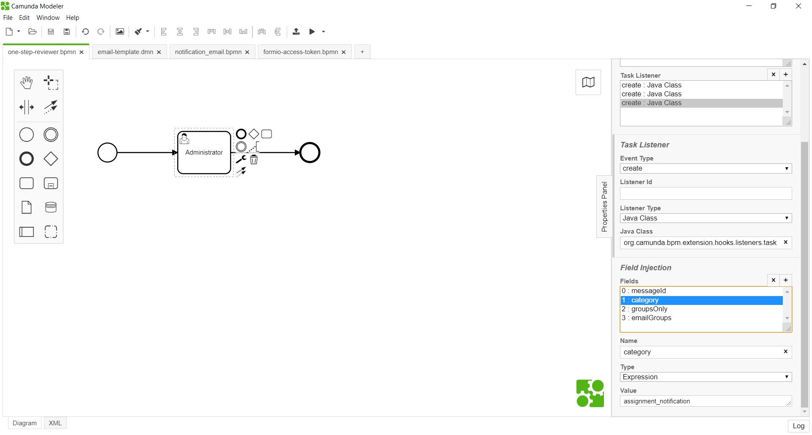
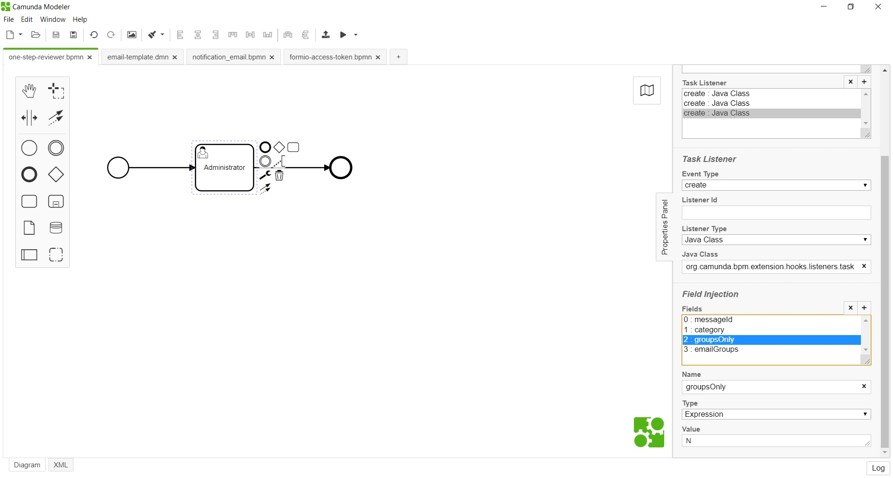
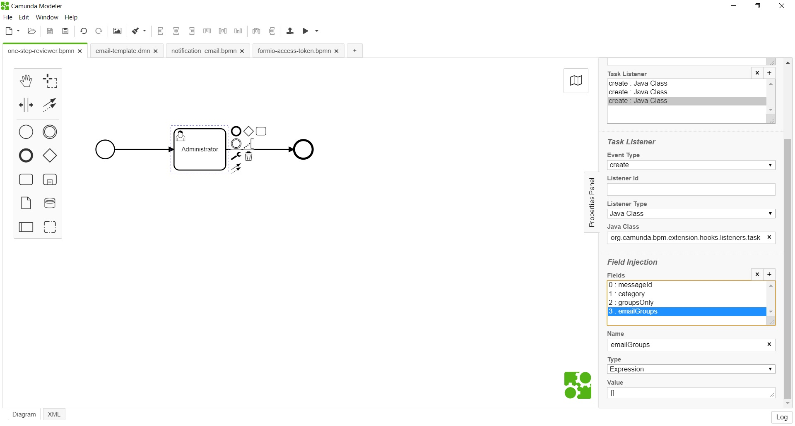

<article class="docs-article" id="section-1">
    <section class="docs-section" id="item-1-1">
        <div>
            <h2 id="notify-listener">Notify Listener</h2>
            <hr>
            <p><strong>org.camunda.bpm.extension.hooks.listeners.task.NotifyListener</strong></p>
            <p>This component can be used on <strong>CREATE</strong> event of task listener; and
                sends email upon
                task creation.
                It sends email to members of candidate&#39;s group and to members of
                <strong>emailGroups</strong>
                (Optional) .
            </p>

            <h4 id="type">Type</h4>
            <p>Task Listener</p>
            <h4 id="how-it-works">How it Works</h4>
            <p>This component relies on listed parameters.
                a. messageId [Mandatory = Yes]<br>b. category [Mandatory = Yes]<br>c. groupsOnly
                [Mandatory =
                Yes]<br>c. emailGroups [Mandatory = Yes] </p>
            <ul>
                <li>messageId (Listener field of type expression): This maps to the any process
                    event.</li>
                <li>category (Listener field of type expression): This maps to the email template
                    DMN category.
                </li>
                <li>groupsOnly (Listener field of type expression): This flags that the email to be
                    sent only to
                    <strong>emailGroups</strong>.
                </li>
                <li>emailGroups (Listener field of type expression): Takes in email group names as
                    array. For
                    example. [&quot;ADMO&quot;,&quot;ED-Operations&quot;].</li>
            </ul>
            <h4 id="how-to-use">How to Use</h4>
            <p>Below snapshot shows how to configure the <strong>NotifyListener</strong> to a task.
            </p>
            <h5
                id="formconnectorlistener-being-configured-on-create-of-task-with-message-event-details-">
                FormConnectorListener being configured on create of task; with message event
                details.</h5><br><br>
            <p></p>
            <br><br>
            <p></p>
            <br><br>
            <p></p>
            <br><br>
            <h5
                id="below-snapshot-shows-configuration-of-optional-parameter-additionalemailgroups-">
                Below snapshot
                shows configuration of optional parameter (additionalEmailGroups).</h5><br><br>
            <p><br><br>
                Click here <a href="Form Duration Attributes Listener.html">Form Duration Attributes
                    Listener</a>
            </p>

        </div>
    </section>
    </article>